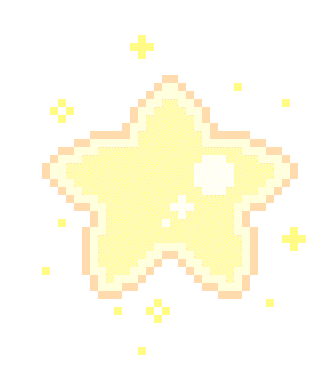

Identidade
Por mais que o tempo mude, sabemos que há algo que sempre viverá dentro de nós. Podemos seguir caminhos ou decisões diferentes mas nós sempre sentimos a necessidade de voltar para o nosso ponto central.
São como ciclos, que sempre retornam para o mesmo ponto após um tempo. Seja crença sua ou não, mas pelo menos com base na minha, estamos aqui na Terra com um propósito, o de aprender algo para daí então retornar de onde viemos, e depois recomeçar o ciclo novamente. Imagine que essa vida se tem um propósito e esse propósito é imutável e duradouro por toda a sua vivência, mas que você só perceberá isso no momento em que olhar para a sua vida e peceber isso.
Olhando para a minha, sempre me recordo de afirmações que eu fazia quando criança. Afirmações atreladas com convicções e ideais que tenho até hoje, vestidas de sonhos e necessidades não materiais.
Anos atrás eu desenhei um poster sobre como eu desejaria que o meu futuro fosse, tenho eles no meu coração desde o momento que essas sementinhas surgiram na minha vida em formato de ideias. É engraçado que esse poster que eu falei é dividido em degraus, onde cada degrau eu conquistaria algo novo para alcançar os meus objetivos. Embora eu venha tentado seguir cada passo como no que eu ilustrei, algo não deu certo pra mim, o degrau do emprego, mas estou em direção a um degrau de um momento que seria diferente, o do ingresso à faculdade e eu estou muito confiante de que eu irei conquistar em breve.
Então, por mais que algo não dê certo, a gente continua mesmo assim ou tenta de uma outra forma, em um caminho diferente, mas sempre olhando para a estrela do Norte, sabendo que um dia iremos alcançá-la, porque é para isso que estamos aqui. Vejo isso nas pequenas coisas: o meu tempo de estudo vem se concentrando quase que 100% ao ENEM, o que não dá tanto espaço assim para a programação, mas é algo que me faz falta, algo que eu tenho a necessidade de voltar para esse ponto da trilha para não me perder com o que não me pertence, coisas que não fazem parte do meu aprendizado desta minha passagem na Terra.
Então eu vejo a identidade como algo que é nosso, algo profundo e que sempre estará acesso dentro de nós, que vai dizer como nós realmente somos, só somos assim porque precisamos, ou de nada valerá essa vida.
Coloquei a Riley na capa porque eu realmente fui tocado com o filme naquele momento em que a Ansiedade falou "Eu só estava tentando proteger a Riley", o que caramba, expõe todas essas engrenagens que nos movem. Distanciar-se de quem nós somos é como abrir mão do ar dos nossos pulmões, abraçar nós mesmos por inteiro, nossa identidade, é estar fiel ao que nos é vital para viver.
